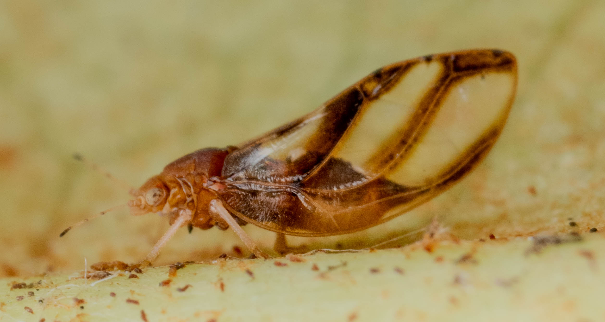

Arb Strats
In early spring, Nichols Arboretum is awfully quiet. The spring ephemerals are slowly waking up, and they pay our impatience no mind. Thankfully, the insects have already come out to entertain those who know where to look.
My first recommendation is going to seem odd to those of you versed in ecology. I seriously encourage bug-seekers to look underneath the leaves of the Great Smoky Mountain transplants, namely Great Rhododendron and Mountain Laurel. These hardy shrubs give numerous creatures vast swaths of unchanging cover, from jumping spiders to fellows like this Blackberry Psyllid.
